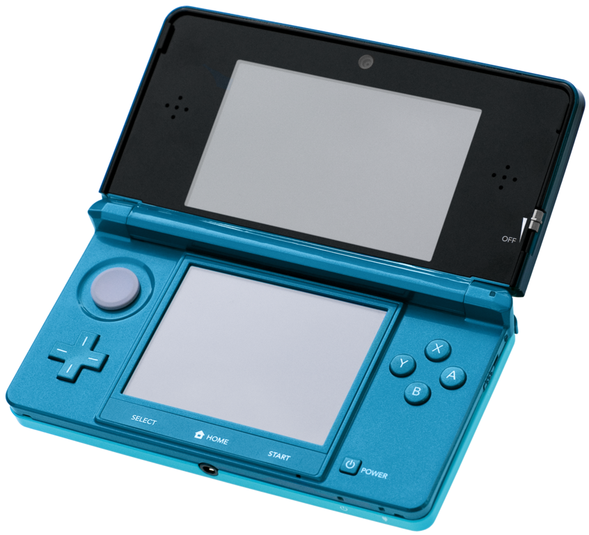
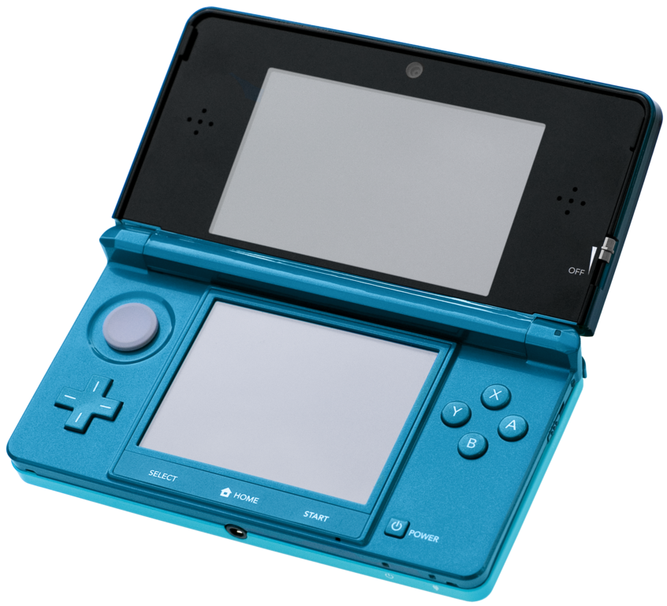

Cette fois ci c’est la DS qui a droit a sa version améliorée en 2011 : La Nintendo 3DS qui comporte cette fois ci en plus un joystick multidirectionnel et une option d’effet 3D.
S’en suit une version « améliorée » de la Wii en 2012: la Wii U avec sa manette possédant un écran tactile cependant qui connaitra un moins bon succès que son ancienne version et enfin une version 2DS regroupant les jeux de la DS et de la 3DS en une même console en 2013.
 
